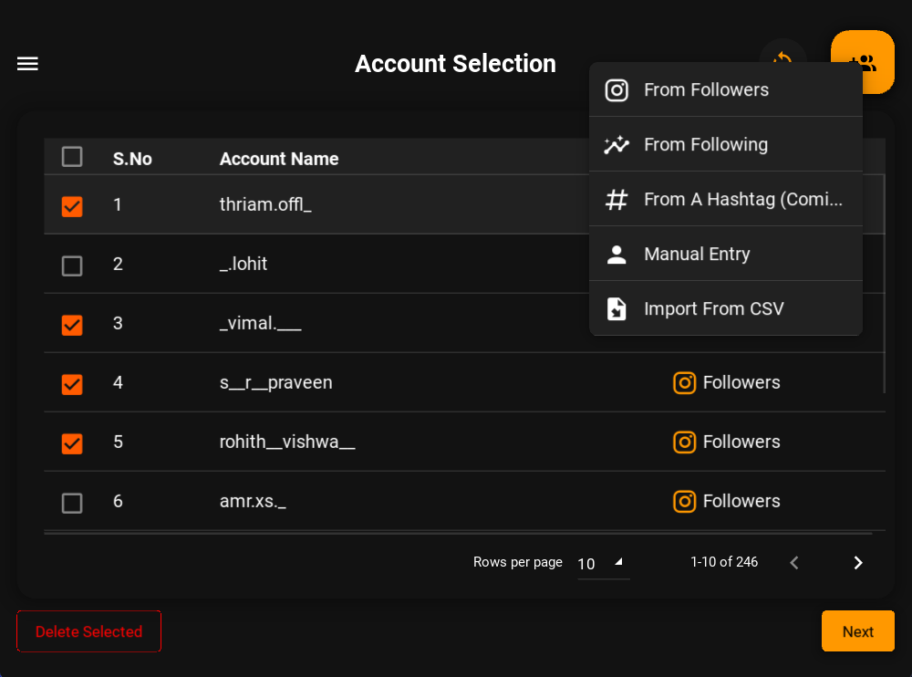

Welcome to Mr.DM’s documentation!#
A quick and easy tool for automating your Instagram DMs.
MR.DM is a tool for automating your Instagram DMs. Sending marketing messages about your newly launched products to your followers is a tiring process to accomplish manually. MR.DM can solve all of that in just 3 simple steps.
Login to your Instagram account.
Load the Accounts you want to send the message to from various sources.
Enter the message you want to send and click send.
MR.DM will take care of the rest. It will send the message to all the accounts you have loaded.
Caution
MR.DM is not intended for spamming. Please use it responsibly. Oxlac and the contributors of MR.DM are not responsible for any misuse of this tool.
Contents: